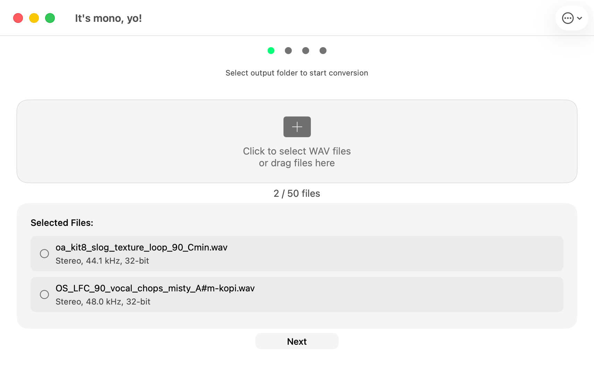

How to Convert Stereo WAV Files to Mono on Mac
Many hardware samplers and music production workflows require mono WAV files. If you have stereo samples that need to be converted, here is how to do it quickly on macOS.

Why Convert Stereo to Mono?
Hardware samplers like the Erica Synths Sample Drum and many Eurorack samplers only accept mono WAV files. When you load a stereo file into these devices, it may play only one channel, sound distorted, or not load at all. Converting to mono ensures compatibility and consistent playback.
Step-by-Step: Convert Stereo WAV to Mono
Download the app
Get It's mono, yo! from the Mac App Store. It requires macOS 11.0 or later.
Add your WAV files
Drag and drop your stereo WAV files into the app, or press ⌘O to open a file browser. You can add as many files as you need for batch conversion.
Select an output folder
Choose where you want the converted mono files to be saved. The original files are never modified.
Convert
The app converts each file to mono while preserving the original sample rate and bit depth. You can track progress in real time.
What Happens During Conversion?
The app mixes the left and right channels of each stereo WAV file into a single mono channel. The original sample rate (44.1 kHz, 48 kHz, 96 kHz, etc.) and bit depth (16-bit, 24-bit, 32-bit) are preserved. This means your converted files maintain the same audio quality, just in mono format.
Who Is This For?
- Musicians preparing samples for Erica Synths Sample Drum
- Eurorack users who need mono files for modular samplers
- Producers preparing sample packs for hardware devices
- Anyone who needs to batch convert WAV files to mono on macOS
Download Now
Available on the Mac App Store. No ads, no in-app purchases, no subscriptions.